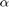
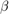
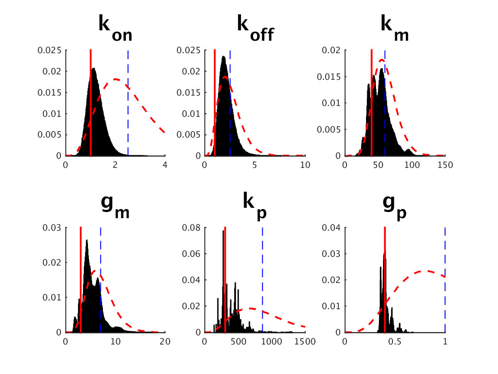
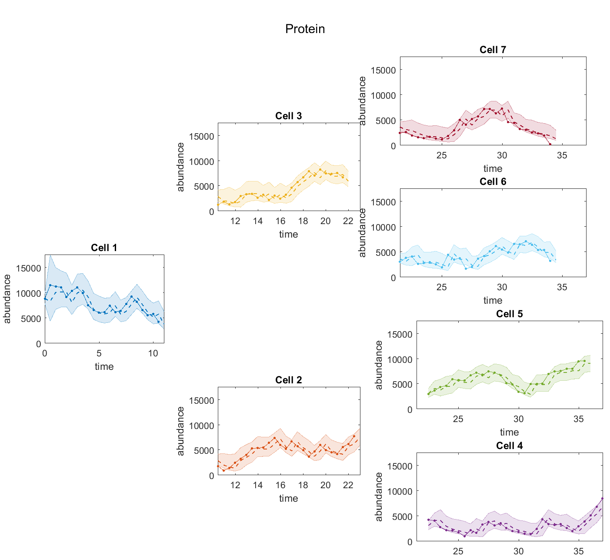

STILT 1.0: Installation and tutorial
Contents
Introduction
This document contains information about the installation and usage of STILT. For details on the method please see TODO: citation
Installation
The STILT toolbox is a set of Matlab scripts/functions and is 'installed' by copying and adding the directory to Matlab's search path. Furthermore, the stochastic simulation within STILT can (optionally) be accelerated by compiling Matlab's Poisson random number function (poissrnd). Installation and compilation can be performed by running the script init.m in STILTs top-level directory.
Before you run init.m, you can configure the following variables (found in init.m):
- SAVE_PATH = true | false
- COMPILE_POISSONRND = true | false
STILT uses libSBML-5.12.0 to load SBML models. If another compatible version of this library is installed on the Matlab path, the directory /thirdparty/libSBML-5.12.0-matlab can be deleted.
init
SBML model
STILT reads SBML files via libSBML and uses the species, parameters and reactions definitions contained within. The information is used for STILT's options initialization and for the generation of a model specific forward simulation function (from stoichiometry and reaction definition).
Biochemical species for which there is no net change in copy number should nevertheless be specified as educt and product when necessary for a reaction to proceed. For example, for the reaction X + Y --> X + Z the species X is both educt and product. The definition of reaction rates is imported from kineticlaw.formula field of the reaction definition with in the SBML file. Latex syntax can be used for the names of species and parameters for plotting. See examples/Nanog/NoFeedback.xml and examples/Nanog/NegFeedback.xml for example SBML model configuration.
Data
Experimental data used for parameter inference is specified as a Matlab structure with the fields time, cellNr and inspected, which must be vectors of equal length. The ith entry of each of these vectors specifies a single observation at time time(i) of the cell with index cellNr(i). Cellular genealogy is introduced via the field cellNr, such that the parent cell with index j gives rise to daughter cells with indices 2*j and 2*j+1, e.g. cell 1 has daughter cells 2 and 3. If the observation at time i is to be censored (i.e. not used for inference), the field inspected(i) should be set to 0, otherwise 1. For each observed species one field with the species' name and one with the species' and the suffix Sigma containing the measurement noise magnitudes at each time point should also be included in the data structure (see example below). Example structure with a single observed species named "Protein" and 147 observations:
time: [1x147 double]
cellNr: [1x147 double]
Protein: [1x147 double]
inspected: [1x147 double]
ProteinSigma: 200Configuration
The tutorial contains the steps necessary to perform model selection on linage tree data as shown in the publication.
Working directory, model, data
STILT requires an SBML model definition and the measurement data as input. Data an either be specified by creating a data structure with the fields above, or by using the function stlLoadData to load a .mat file containing a structure named data with the required format. stlLoadData also verifies that the data are correctly formatted.
% Our working directory. Everything (including results) stored in there. exampleDir = 'examples\Nanog\'; % Load SBML via libSBML sbmlModelNoFeedback = TranslateSBML(fullfile(exampleDir, 'NoFeedback.xml')); % Load data from mat file. % data = stlLoadData(fullfile(exampleDir,[modelName '_Sim_Protein.mat']),'data');
Create options structure
The function stlOptions creates a structure with all options available in STILT set to their default values. It requires the following three arguments in the specified order: i) the sbmlModel, ii) the data structure, and iii) the number of particles to use for inference. It is also possible to leave data empty using [], e.g. if using simulated data. In this case the species names and indices of observed species need to be specified manually (see examples below). Otherwise previously stored data can be loaded using the stlLoadData function.
% Create options template from model, data and particle number optsNoFeedback = stlOptions(sbmlModelNoFeedback, [], 7e5); % Set output directory for results (figures, data, etc will be in subdirectories) optsNoFeedback.OutDir = fullfile(exampleDir, 'NoFeedbackNull_Results');
Configure species' initalization
The function stlSetOptSpecies(opt, ParameterName, FieldName, FieldValue) can be used to configure the behavior of individual species in the options structure. Options are specified as name/value (FieldName, FieldValue) pairs. The field 'Init' contains a Matlab command (as string), which is evaluated at runtime for particle initialzation. The number of particles specified at run time can be accessed with the variable P. The variables '<SpeciesName>1' and '<SpeciesName>Sigma1' contain the first data point for each measured species. Previously initialized variables (each a P-by-1 vector) can be referenced via their species' names.
optsNoFeedback = stlSetOptSpecies(optsNoFeedback, 'DNA_on', 'Init', 'binornd(1, 0.5, [P,1])'); optsNoFeedback = stlSetOptSpecies(optsNoFeedback, 'DNA_off', 'Init', '1-DNA_on'); optsNoFeedback = stlSetOptSpecies(optsNoFeedback, 'RNA', 'Init', 'randi(50,P,1)'); optsNoFeedback = stlSetOptSpecies(optsNoFeedback, 'Protein', 'Init', ... 'max(0,round(normrnd(Protein1, ProteinSigma1, [P, 1])))');
Configure cell division
STILT currently supports three modes of cell division possible for each simulated species. They may be configured for each species individually via the field 'Division' in the STILT options structure:
- 'copy' ... (default) the mother's content is copied to both daughter cells (e.g. for DNA)
- 'binomial' ... the mother's content M is split binomially between the daughters. B(M, 0.5) (if M > 100 approximated with a normal distribution.)
- 'binomial' with the parameter p specified using the additional name/value pair DivisionParameters.
optsNoFeedback = stlSetOptSpecies(optsNoFeedback, 'RNA', 'Division', 'binomial'); % opts_NoFeedback = stlSetOptSpecies(opts_NoFeedback, 'Protein', 'Division', 'binomial'); % default p = 0.5 optsNoFeedback = stlSetOptSpecies(optsNoFeedback, 'Protein', 'Division', 'binomial', ... 'DivisionParameters', 'p=0.5'); % specify p explicitly
Prepare forward simulation functions
STILT's particle filter is based on stochastic simulation (performed by the function stlTauLeaping). The function stlCreateSimulationFunction generates code for performing stochastic simulation using the information contained in sbmlModel (i.e. the stoichiometry and reaction propensity). The field opts.fSimulate contains a function handle to these simulation files.
optsNoFeedback = stlCreateSimulationFunction(sbmlModelNoFeedback, optsNoFeedback, exampleDir, 'NoFeedback');
Generating synthetic data
With STILT it is easy to generate synthetic trees of arbitrary size for a specified model. Use the funciton stlSimulateDataSet to generate a data structure that is compatible with the inference functions. In the following we generate synthetic data using the No Feedback model.
% initial conditions X0 (DNA on, DNA off, mRNA, protein) X0 = [0, 1, 50, 1e4]; % model parameters (k_on, k_off, k_m, g_m, k_p, g_p) theta = [1, 1, 40, 3, 300, 0.4]; % observe only the protein optsNoFeedback = stlSetOptSpecies(optsNoFeedback, 'Protein', 'Observed', true); optsNoFeedback = stlSetOptSpecies(optsNoFeedback, 'Protein', 'DataIdx', 1); muCellLife = 12; % mean of cell life time stdCellLife = 1; % std of cell life time dt = 0.5; % observation frequency simData_NoFeedback = stlSimulateDataSet(X0, theta, 3, {muCellLife, stdCellLife, dt}, ... optsNoFeedback, sbmlModelNoFeedback, 500);
Configure parameter priors
The function stlOptions creates empty entries for each of the parameters in sbmlModel. Set individual parameter's fields using the function stlSetOptParam(opt, ParameterName, FieldName, FieldValue) as shown below. The hyperparameters of the gamma prior distributions (, ) for each model parameter should be configured as shown below.
optsNoFeedback = stlSetOptParam(optsNoFeedback, 'k_on', 'GammaPrior', [5, 2]); % DNA on rate optsNoFeedback = stlSetOptParam(optsNoFeedback, 'k_off', 'GammaPrior', [5, 2]); % DNA off rate optsNoFeedback = stlSetOptParam(optsNoFeedback, 'k_m', 'GammaPrior', [12, 0.2]); % mRNA birth rate optsNoFeedback = stlSetOptParam(optsNoFeedback, 'g_m', 'GammaPrior', [7, 1.0]); % mRNA death rate optsNoFeedback = stlSetOptParam(optsNoFeedback, 'k_p', 'GammaPrior', [4.3, 0.005]); % protein birth rate optsNoFeedback = stlSetOptParam(optsNoFeedback, 'g_p', 'GammaPrior', [5, 5]); % protein death rate
Set the field TrueParamValuesInModel in the options for STILT to true if the numeric parameter values from SBML are assumed to be correct (i.e. when using synthetic data for which the correct parameters are known) and should be plotted, e.g. in the parameter posterior plot.
optsNoFeedback.TrueParamValuesInModel = true;
Configure saving and showing plots
Change the parameters ShowPlotsWhileFiltering and SavePlotsWhileFiltering to generate and save plots, respectively, while running the algorithm. The default behavior is not to show plots while running. Plots can be shown after the run as completed using hte stlPlot... functions.
optsNoFeedback.ShowPlotsWhileFiltering = true; optsNoFeedback.SavePlotsWhileFiltering = true;
Running the particle filter
The function stlParticleFilterTree performs the parameter inference. As a result, it generates a results structure res which consists of the following fields:
- c ... a matrix of samples from the parameters' posterior distributions (particles-by-parameters)
- w ... a vector of weights for the individual particles (particles-by-1)
- alpha, beta ... the hyperparameters of each particle's gamma distribution, (particles-by-1) each
- Q ... a matrix of quantiles of the distributions of the simulated system state for each cell (timepoints-by-species-by-quantiles)
- obs ... data re-structured cell oriented for plotting
Configure LatentQuantilesPerTimestep >= 1 to configure the number of timesteps to use for interpolating between observations (helps smooth estimated trajectories).
opts.LatentQuantilesPerTimestep=1;
% run the particle filter with the No Feedback model and save the results
optsNoFeedback.ParticleNr = 7e5;
resNoFeedback_Null = stlParticleFilterTree(sbmlModelNoFeedback, simData_NoFeedback, optsNoFeedback);
Plotting the results
Posterior of parameters
stlPlotPosterior plots samples from each parameter's posterior (black), its true value (if known, red vertical line), the prior (red dashed line) and the prior mean (blue vertical line).
stlPlotPosterior(resNoFeedback_Null.c, sbmlModelNoFeedback, optsNoFeedback, []);

Plot prediction and (if available) measurements for all species
The function stlPlotTimecourseSpeciesQuantilesTree generates a plot showing the sampled simulation time courses and experimental measurements, arranged cell-wise in a tree layout.
stlPlotTimecourseSpeciesQuantilesTree(sbmlModelNoFeedback, resNoFeedback_Null.obs, optsNoFeedback, resNoFeedback_Null.Q, []);

Negative Feedback model
In the following we attempt to fit the data from the No Feedback model using the (incorrect) Negative Feedback model. Later we compute model evidence and Bayes Factors.
% Load model SBML sbmlModelNegativeFeedback = TranslateSBML(fullfile(exampleDir, 'NegFeedback.xml')); % Create options template from model, data and particle number optsNegFeedback = stlOptions(sbmlModelNegativeFeedback, simData_NoFeedback, 7e5); % Set output directory for results (figures, data, etc will be in subdirectories) optsNegFeedback.OutDir = fullfile(exampleDir, 'NoFeedbackNeg_Results'); % set parameter prior parameters optsNegFeedback = stlSetOptParam(optsNegFeedback, 'k_on', 'GammaPrior', [5, 0.8]); % DNA on rate optsNegFeedback = stlSetOptParam(optsNegFeedback, 'k_off', 'GammaPrior', [7, 1e5]); % DNA off rate optsNegFeedback = stlSetOptParam(optsNegFeedback, 'k_m', 'GammaPrior', [12, 0.2]); % mRNA birth rate optsNegFeedback = stlSetOptParam(optsNegFeedback, 'g_m', 'GammaPrior', [7, 1.0]); % mRNA death rate optsNegFeedback = stlSetOptParam(optsNegFeedback, 'k_p', 'GammaPrior', [4.3, 0.005]); % protein birth rate optsNegFeedback = stlSetOptParam(optsNegFeedback, 'g_p', 'GammaPrior', [5, 5]); % protein death rate % set cell division parameters optsNegFeedback = stlSetOptSpecies(optsNegFeedback, 'DNA_on', 'Init', 'binornd(1, 0.5, [P,1])'); optsNegFeedback = stlSetOptSpecies(optsNegFeedback, 'DNA_off', 'Init', '1-DNA_on'); optsNegFeedback = stlSetOptSpecies(optsNegFeedback, 'RNA', 'Init', 'randi(50,P,1)'); optsNegFeedback = stlSetOptSpecies(optsNegFeedback, 'Protein', 'Init', 'max(0,round(normrnd(Protein1, ProteinSigma1, [P, 1])))'); % create simulation functions optsNegFeedback = stlCreateSimulationFunction(sbmlModelNegativeFeedback, optsNegFeedback, exampleDir, 'NegFeedback'); % show plots while running optsNegFeedback.ShowPlotsWhileFiltering = 1; optsNegFeedback.SavePlotsWhileFiltering = 1; % run the particle filter with the Negative Feedback model and the No Feedback data optsNegFeedback.ParticleNr = 7e5; resNoFeedback_Neg = stlParticleFilterTree(sbmlModelNegativeFeedback, simData_NoFeedback, optsNegFeedback);
Model comparison
In the following we first generate data from a different model, the Negative Feedback model. We then try to fit this data with both the correct model and the incorrect No Feedback model. We then perform model comparison for to see if the correct model is preferred.
Generate Data from the Negative Feedback model
% initial conditions X0 = [0, 1, 50, 3e3]; % model parameters (k_on, k_off, k_m, g_m, k_p, g_p) theta = [10, 1e-4, 100, 3, 1000, 0.4]; muCellLife = 12; sigCellLife = 1; dt = 0.5; % mean, std of cell life times and the dt parameter for observation frequency simData_NegativeFeedback = stlSimulateDataSet(X0, theta, 3, {muCellLife, sigCellLife, dt}, ... optsNegFeedback, sbmlModelNegativeFeedback, 500); % Run the particle filter with the Negative Feedback model and Neg Feedback data optsNegFeedback.ParticleNr = 7e5; optsNegFeedback.OutDir = fullfile(exampleDir, 'NegFeedbackNeg_Results'); resNegFeedback_Neg = stlParticleFilterTree(sbmlModelNegativeFeedback, simData_NegativeFeedback, optsNegFeedback);
We also fit the Negative Feedback data with the incorrect No Feedback model
% Set output directory for results (figures, data, etc will be in subdirectories) optsNoFeedback.OutDir = fullfile(exampleDir, 'NegFeedbackNull_Results'); resNegFeedback_Null = stlParticleFilterTree(sbmlModelNoFeedback, simData_NegativeFeedback, optsNoFeedback);
Bayes factor computation
Finally we perform model comparison using Bayes factors to select between the two models for each data set.
No Feedback model is true:
fprintf('Log P(no feedback) - Log P(neg feedback): %f\n', resNoFeedback_Null.margLogLik - resNoFeedback_Neg.margLogLik)
Log P(no feedback) - Log P(neg feedback): 112.960154
Negative feedback model is true:
fprintf('Log P(neg feedback) - Log P(no feedback): %f\n', resNegFeedback_Neg.margLogLik - resNegFeedback_Null.margLogLik)
Log P(neg feedback) - Log P(no feedback): 32.333551